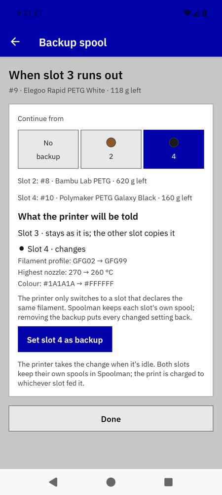
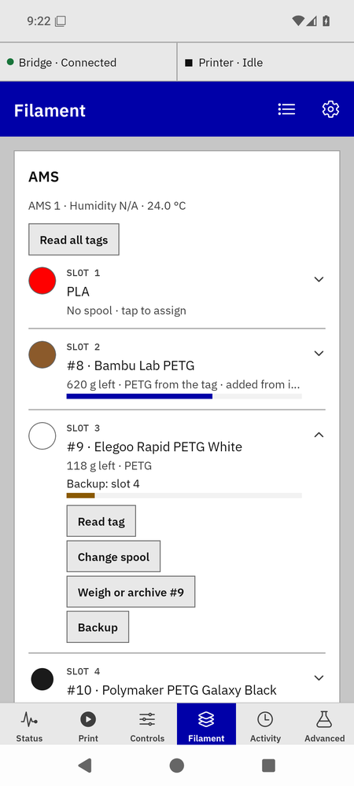
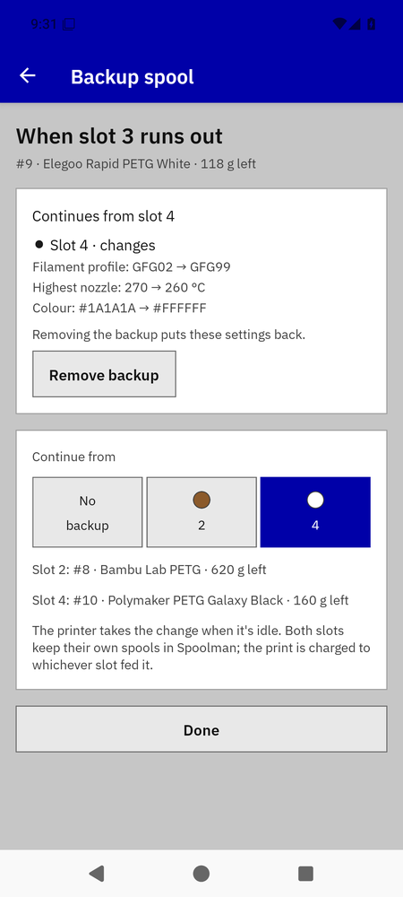
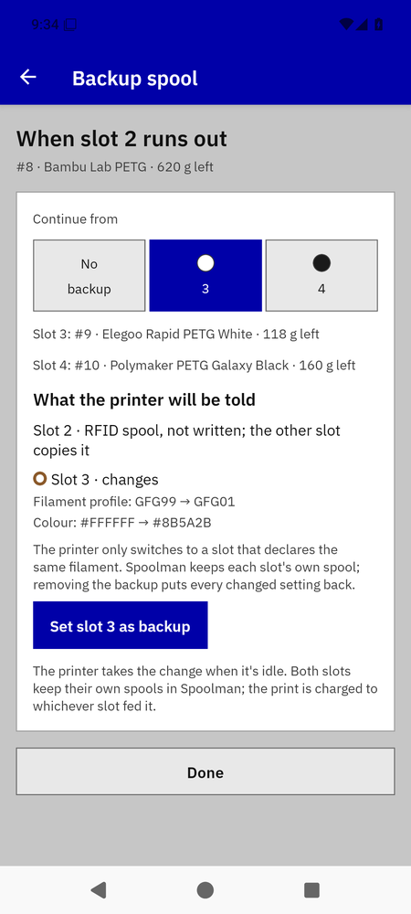
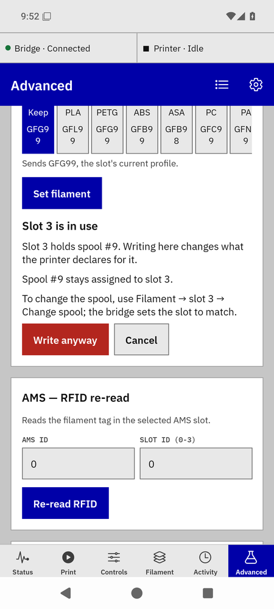

Refill backups
A backup is one AMS slot taking over when another runs out, using the printer's own auto-refill. The printer only switches between slots that declare the same filament, so the bridge tells the backup slot it holds the same product, temperatures and colour as the first. Spoolman keeps each slot's real spool; the print is charged to whichever slot fed it. One backup per printer in this release.
Setting a backup

Backup sheet for slot 3.
- Both slots loaded with the same material (PETG with PETG) and the printer idle. Tap the first slot's row, then Backup ›.
- Under Continue from, tap the backup slot's tile. The sheet shows What the printer will be told: each field that will change on each slot, before → after, and that removing the backup puts it back.
- Tap Set slot 4 as backup. The toast says "Backup set: slot 4 · waiting for the printer to confirm" while the printer regroups its slots (6–10 s on a P1S), then both rows read the chain: "Backup: slot 4 · confirmed" on the first, "Backs up slot 3 · confirmed" on the second.

The chain on both rows; the backup slot shows its own spool colour with a ring in the declared colour.

A standing backup, with what it changed and Remove backup.
A tagged spool as the anchor

A tagged spool as the anchor: the untagged slot copies its declaration.
A Bambu spool with a tag can be the slot others back up, or back up another slot, but it is never written: its tag's declaration becomes the target for the untagged slot. The untagged slot then poses as the tagged one (its row shows its own spool colour with a ring in the tag's colour). Two tagged spools can't back each other up; the sheet says so.
What the sheet refuses, in the bridge's words
- "Slot 1 is PLA and slot 3 is PETG; a backup needs the same material. Load a matching spool or set the slot's material first." — a backup never switches chemistry, so the tiles only offer same-material slots.
- "Slot 2 is still reading its tag; try again when it's done" / "Slot 2's tag could not be read; reload the spool or read its tag again".
- "Slot 3 has not reported recently; try again in a moment" — a stale slot.
- "The printer accepts this change when it's idle" — while printing.
- "Remove the slot 3 backup first" — one chain per printer; the sheet shows the standing chain instead of tiles.
- "Physical refill sources changed; review a new preview" — a slot changed between the preview and Set; the sheet re-previews and you set again.
Removing a backup
- Tap the first slot's row, then Backup, then Remove backup (or the No backup tile).
- The bridge puts every changed setting back on both slots. If the printer is busy or away, the toast says the slots go back when it's idle, and the chain line stays until then.
The raw slot write on Advanced

The guard on a raw filament setting for a slot that holds a spool.
Advanced → AMS — filament setting writes a slot's declaration directly. For a slot that holds an assigned spool or belongs to a backup the bridge refuses once and the app explains in place: what the write changes, whether the spool stays assigned, and the safe way to do it (Change spool on the Filament tab, or removing the backup). Write anyway sends it regardless; the button names the assignment it ends when it ends one.
When the printer doesn't confirm
A backup the printer never confirmed becomes a Needs you card on the Filament tab with the printer's words ("The printer has not confirmed slot 4 yet", "The spool in slot 4 was changed on the printer"). Try again re-reads the slot first: if it already shows the target the backup is adopted; if it still shows the original the write is sent once more; anything else stays a card. Remove backup puts the slots back. Nothing is resent on its own.
During a print
When the first slot runs out the printer switches on its own; Status shows "Switched to slot 4 at layer 140". The bridge charges each slot's spool for the layers it fed. A quiet printer does not demote a confirmed backup: the rows keep "last confirmed" wording until the printer reports again.
After a bridge restart the chain reads "waiting for the printer to confirm" until the printer's next full report; nothing is resent. If it stays waiting, open the sheet: Try again re-reads the slots first, Remove backup puts both slots back. A safe habit before updating the bridge: remove the backup, update, set it again.
Bambu Bridge manual · for bridge 0.7.0b1 and app 0.21.0-beta.9. Independent community software, AGPL-3.0-only.